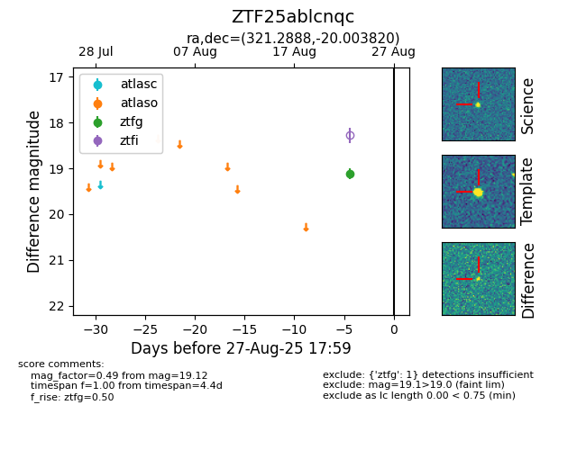

Target ZTF25ablcnqc at 2025-08-27 17:59, see:
FINK: fink-portal.org/ZTF25ablcnqc
Lasair: lasair-ztf.lsst.ac.uk/objects/ZTF25ablcnqc
ALeRCE: alerce.online/object/ZTF25ablcnqc
alt names
ZTF25ablcnqc (ztf,fink)
coordinates:
equatorial (ra, dec) = (321.2888,-20.00382)
galactic (l, b) = (29.9666,-42.51494)
photometry
last ztfg=19.12
1 ztfg detections
